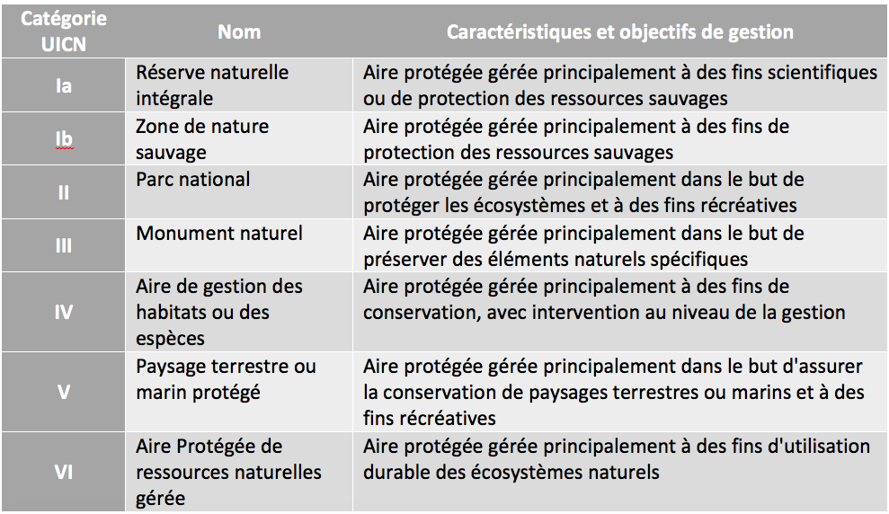

Tableau de Bord des Révisions
Accès direct à tes carnets de synthèse pour chaque partie du programme et aux outils d'entraînement oraux.
🗣️ Entraînement Oral
| Épreuve | Lien d'entraînement |
|---|---|
| ORAL 1 : Épreuve disciplinaire appliquée Assistant IA (Gemini) et mises en situation |
Ouvrir l'Assistant |
| ORAL 2 : Entretien professionnel Synthèse documentaire et posture de fonctionnaire |
Ouvrir le Notebook |
⏳ Histoire - Notebooks LM
| Partie du Programme | Lien NotebookLM |
|---|---|
| Partie 1 : L'Antiquité et le Haut Moyen Âge La Grèce classique, Rome (République et Empire) |
Ouvrir le Notebook |
| Partie 2 : Le Moyen Âge Contacts en Méditerranée, Société et Église |
Ouvrir le Notebook |
| Partie 3 : Moderne Mondialisation, Renaissance, Révolution et Empire |
Ouvrir le Notebook |
| Partie 4 : Le Monde Contemporain (XIXe) Économie, société et politique (1815-1914) |
Ouvrir le Notebook |
| Partie 4 : Le Monde Contemporain (XXe) Guerres, totalitarismes, guerre froide |
Ouvrir le Notebook |
🌍 Géographie - Notebooks LM
| Partie du Programme | Lien NotebookLM |
|---|---|
| Partie 1 : Géographie de la France et de l'UE |
Ouvrir le Notebook |
| Partie 2 : Géographie de la population et Géographie urbaine |
Ouvrir le Notebook |
| Partie 2 (Urbaine - Complément) : Dynamiques et activités urbaines |
Ouvrir le Notebook |
| Partie 3 : Géographie de la mondialisation |
Ouvrir le Notebook |
| Partie 3 (Géopolitique) : Frontières, conflits |
Ouvrir le Notebook |
| Partie 4 : Géographie rurale |
Ouvrir le Notebook |
| Partie 4 (Environnement) : Milieux, ressources, risques |
Ouvrir le Notebook |
Plans Magiques - Histoire
🏛️ La Grèce Classique
Problématique : Comment le monde grec à l'époque classique, tiraillé entre un profond sentiment d'unité culturelle (hellénicité) et de perpétuelles rivalités politiques entre cités-États, forge-t-il des modèles politiques hégémoniques inédits avant de succomber à ses propres divisions et d'être absorbé par l'Empire macédonien ?
- I. L'UNITÉ DANS LA FRAGMENTATION: FONDEMENTS CULTURELS ET MODÈLES CIVIQUES
- A. L'hellénicité: identité, religion et rassemblements
- B. L'expérience démocratique athénienne: l'isonomie en action
- C. Les limites et les exclusions du modèle civique
- II. LE VE SIÈCLE: GUERRES, HÉGÉMONIE ET DÉCHIREMENT DU MONDE GREC
- A. Les guerres médiques: le face-à-face avec les Perses
- B. La thalassocratie athénienne: de l'alliance à l'Empire
- C. La guerre du Péloponnèse: le suicide politique des cités
- III. LE IVE SIÈCLE: DE L'INSTABILITÉ DES CITÉS À L'EMPIRE UNIVERSEL
- A. Les luttes incessantes et l'hégémonie introuvable
- B. L'essor de la Macédoine et la perte de liberté des Grecs
- C. Alexandre le Grand: la dilatation du monde grec
🦅 Rome (République et Empire)
Problématique : Comment Rome est-elle parvenue à bâtir et maintenir un empire territorial universel, en adaptant continuellement ses structures politiques, passant d'une République oligarchique minée par l'ampleur de ses propres conquêtes, à un système impérial (le Principat) fondé sur l'intégration des vaincus et la redéfinition permanente de sa « romanité » ?
- I. LA RÉPUBLIQUE ROMAINE: GESTATION D'UN MODÈLE ET CONQUÊTE DE L'HÉGÉMONIE (509 - 133 av. J.-C.)
- A. Un système politique oligarchique et patricio-plébéien
- B. Le rouleau compresseur militaire et la conquête de l'Italie
- C. L'impérialisme méditerranéen et ses conséquences
- II. LE CRÉPUSCULE DE LA RÉPUBLIQUE ET L'INVENTION DU PRINCIPAT (133 av. J.-C. - 14 apr. J.-C.)
- A. La crise systémique: blocages sociaux et violence politique
- B. Le temps des imperatores: la marche vers le pouvoir personnel
- C. Le compromis d'Auguste un régime monarchique masqué
- III. L'EMPIRE: APOGÉE, INTÉGRATION ET MUTATIONS DE L'ANTIQUITÉ TARDIVE (Ier - Ve siècle)
- A. La Pax Romana et la romanisation des provinces
- B. La "crise du IIIe siècle" et le redressement impérial
- C. Christianisation et fragmentation de l'Occident
⚔️ Contacts et conflits en Méditerranée (VIe-XIIIe siècles)
Problématique : Dans quelle mesure la Méditerranée, d'abord fragmentée par l'effondrement de l'Antiquité tardive et l'émergence de trois aires de civilisation rivales (Byzance, Islam, Occident latin), devient-elle entre le VIe et le XIIIe siècle un laboratoire complexe où la violence des affrontements géopolitiques n'entrave pas, mais s'articule paradoxalement avec de puissantes dynamiques d'échanges commerciaux et de métissages culturels ?
- I. La fragmentation d'un "lac romain" et la genèse de trois aires de civilisation en confrontation (VIe-Xe siècles)
- A. Byzance, entre permanence impériale et redéfinition territoriale
- B. Le bouleversement islamique: expansion, structuration et pluralité des califats
- C. L'Italie méridionale et insulaire: carrefours et zones frontières
- II. L'inversion des rapports de force: offensives latines et recompositions géopolitiques (XIe-XIIIe siècles)
- A. La Reconquista et l'intégration de la Méditerranée occidentale
- B. Croisades, mythes croisés et fragilité des États latins d'Orient
- C. L'Orient redessiné: l'irruption mongole et le glacis mamelouk
- III. Au-delà du fracas des armes: la Méditerranée comme espace partagé d'échanges et de métissages
- A. La thalassocratie marchande et la "révolution" nautique italienne
- B. "Convivencia" et conflictualité: minorités et cohabitation pragmatique
- C. L'effervescence intellectuelle: le creuset des transferts culturels
⏱️ Frise Chronologique : Les Dynasties Arabo-Musulmanes
Outil interactif pour visualiser les rapports de force en Méditerranée (VIIe - XVIe siècles). Clique sur les barres pour afficher les détails.
⛪ Société, Église et pouvoir politique dans l'Occident médiéval (XIe-XVe siècles)
Problématique : Comment l'Occident médiéval, initialement fragmenté par la seigneurie et structuré par les ambitions théocratiques de l'Église grégorienne, parvient-il, à travers de profondes mutations socio-économiques et le traumatisme des crises de la fin du Moyen Âge, à asseoir la genèse de l'État moderne fisco-militaire ?
- I. L'ordre féodal, l'élan ecclésial et l'expansion de l'Occident (XIe-XIIe siècles)
- A. La seigneurie et la structuration de la société féodale
- B. La réforme grégorienne et la "révolution" papale
- C. Un monde en expansion: essor agraire et renouveau urbain
- II. L'apogée des pouvoirs et de l'encadrement social (XIIIe - début XIVe siècles)
- A. La papauté théocratique et le contrôle des consciences
- B. La consolidation des appareils d'État monarchiques
- C. L'apogée urbain: universités et réseaux marchands
- III. Le crépuscule d'un monde et les recompositions (XIV-XVe siècles)
- A. Les fléaux: une society ébranlée et la "crise" du système
- B. La guerre permanente et le triomphe de l'État fisco-militaire
- C. Schisme, conciliarisme et redéfinition des dialogues politiques
🌍 Renaissance, Humanisme et Réformes religieuses (XVe-XVIIe siècles)
Problématique : En quoi le désenclavement du monde, le bouleversement des savoirs et la fracture religieuse des XVe-XVIIe siècles constituent-ils les moteurs interdépendants d'une modernité européenne à la fois conquérante, innovante et profondément divisée ?
- I. L'ouverture au monde: l'ère des Grandes Découvertes et la première mondialisation
- A. Les causes et les moyens de l'expansion européenne
- B. Conquête, exploitation et constitution des premiers empires coloniaux
- C. L'avènement contesté d'une "première mondialisation"
- II. La Renaissance et l'Humanisme: un renouvellement intellectuel et artistique
- A. L'Humanisme: replacer l'Homme au centre et redécouvrir les Anciens
- B. Le renouveau balbutiant des sciences et des savoirs
- C. La floraison artistique et le rôle du mécénat
- III. Les Réformes religieuses: l'Europe face à la fracture confessionnelle
- A. Les causes de la rupture et l'éclosion des socialismes protestants
- B. La Réforme catholique (Contre-Réforme) et l'ordre tridentin
- C. L'entremêlement du politique et du religieux: le temps des guerres
🇫🇷 Révolution française et Empire
Problématique : En quoi les remises en cause intellectuelles et les mutations socio-économiques du XVIIIe siècle préparent-elles l'effondrement de l'Ancien Régime, déclenchant une onde de choc révolutionnaire puis impériale qui refonde radicalement et par la guerre l'ordre politique et social de la France et de l'Europe ?
- I. Le XVIIIe siècle: le temps des ruptures intellectuelles, matérielles et politiques
- A. L'essor matériel et les bouleversements socio-économiques
- B. Les Lumières: la contestation idéologique de l'absolutisme
- C. L'impasse de l'absolutisme français face aux fragilités conjoncturelles
- II. La Révolution française de la destruction de l'Ancien Régime à la difficile quête d'un ordre nouveau (1789-1799)
- A. 1789 et la monarchie constitutionnelle: le transfert de souveraineté
- B. La radicalisation : République populaire, guerre et Terreur (1792-1794)
- C. Le Directoire (République bourgeoise): l'impossible stabilisation (1794-1799)
- III. L'Empire: ordre, hégémonie militaire et effondrement (1799-1815)
- A. Le Consulat: le compromis autoritaire et les "masses de granit"
- B. L'Europe napoléonienne: expansion et système d'exploitation
- C. L'effondrement: l'éveil des nations et le retour des rois
🏭 Le XIXe siècle français (1815-1914)
Problématique : Comment la France du XIXe siècle (1815-1914) parvient-elle, à travers d'incessants bouleversements institutionnels et une industrialisation heurtée, à forger une "modernité désenchantée" mêlant enracinement du modèle républicain, mutations socio-économiques profondes et expansion impériale à l'échelle mondiale ?
- I. La longue quête de stabilité politique de l'ordre monarchique aux balbutiements républicains (1815-1879)
- A. Les monarchies censitaires: le compromis impossible et l'émergence du libéralisme (1814-1848)
- B. Du rêve fraternel à l'ordre impérial: le choc du suffrage universel (1848-1870)
- C. La "décennie indécise" et la fondation de la République par la lutte (1870-1879)
- II. La "modernité désenchantée": mutations économiques, fractures sociales et migrations
- A. Une industrialisation singulière et la redéfinition des classes sociales
- B. L'émergence de la question sociale: luttes ouvrières et féminines
- C. Le paradoxe de l'intégration: la France, première terre d'immigration en Europe
- III. L'apogée d'un État-nation impérial: la République consolidée et mondialisée (1880-1914)
- A. La fabrique du citoyen et l'enracinement du modèle républicain
- B. Crises et contestations: l'épreuve du nationalisme et de l'antisémitisme
- C. La "mission civilisatrice" et la brutalité de l'expansion coloniale
💣 Le XXe siècle : Guerres mondiales, totalitarismes et guerre froide
Problématique : Comment le XXe siècle, inauguré par la matrice des violences de masse et des idéologies totalitaires, a-t-il accouché d'un ordre mondial d'abord polarisé, puis globalisé et asymétrique, redéfinissant sans cesse les hiérarchies de puissance?
- I. L'ère des cataclysmes: destruction de l'ordre européen, violences de masse et totalitarismes (1914-1945)
- A. La matrice de la Première Guerre mondiale: vers la guerre totale
- B. L'entre-deux-guerres et l'apogée des totalitarismes
- C. La Seconde Guerre mondiale: guerre d'anéantissement et génocides
- II. Un monde bipolaire et fragmenté: l'affrontement des modèles et l'émergence de nouveaux acteurs (1945-1991)
- A. La Guerre froide: un monde sous l'équilibre de la terreur
- B. Décolonisations et émergence du "Tiers-Monde"
- C. Vivre les "Trente Glorieuses" et le modèle soviétique: croissances et contestations
- III. Les mutations de la fin de siècle: crises, mondialisation et nouvelles conflictualités (Des années 1970 à nos jours)
- A. Les chocs des années 1970-1980: le tournant néolibéral et environnemental
- B. Le monde post-Guerre froide: de l'hyperpuissance à la globalisation
- C. L'émergence des conflictualités contemporaines: asymétries et poudrière moyen-orientale
Plans Magiques - Géographie
🥖 La France
Problématique : Comment le territoire français, tiraillé entre ses lourds héritages étatiques et centralisateurs, se recompose-t-il à toutes les échelles sous l'effet des dynamiques de métropolisation, de mondialisation et d'intégration européenne, oscillant en permanence entre intégration et fragmentation?
- I. Un territoire en recomposition: la polarisation par les populations et les systèmes productifs
- A. L'armature urbaine et la métropolisation: un territoire polarisé
- B. Les mutations des systèmes productifs: vers l'économie de la connaissance
- C. Des espaces ruraux multifonctionnels: entre déprise et renouveau
- II. Fractures, inégalités et vulnérabilités : la géographie des tensions territoriales
- A. Les ségrégations socio-spatiales aux échelles intra et périurbaines
- B. Le rapport centre-périphérie et la persistance des marges
- C. Vulnérabilités environnementales et conflits d'usage
- III. Aménagement, gouvernance et projection: la France dans ses emboîtements d'échelles
- A. De l'État aménageur à la gouvernance décentralisée: une gestion complexe
- B. La France dans l'Union européenne: intégration et dynamiques transfrontalières
- C. Une puissance mondiale et ultramarine: rayonnement et asymétries
🇪🇺 L'Union Européenne
Problématique : Comment l'Union européenne, objet géographique singulier et institutionnel inédit, parvient-elle à construire une cohésion territoriale face à de profondes fractures internes, tout en cherchant à s'affirmer comme puissance stratégique dans la mondialisation ?
- I. Un objet géographique singulier: la construction d'un territoire par l'intégration
- A. Un projet politique inédit aux frontières mouvantes
- B. Réseaux et mobilités: coudre l'espace européen
- C. L'armature urbaine: une métropolisation en réseau
- II. Diversité, inégalités et fractures: les limites de la cohésion
- A. Le défi démographique: vieillissement et migrations
- B. La persistance des disparités centre-périphérie
- C. Mutations productives et crises des espaces locaux
- III. L'Union européenne dans le monde: une puissance tiraillée
- A. Un géant géoéconomique fondé sur le marché et la norme
- B. Vulnérabilités stratégiques et dépendances
- C. L'intégration par la crise: vers une relance du projet ?
👥 Géographie de la population
Problématique : Comment les dynamiques démographiques contemporaines, héritières d'une longue histoire et de contraintes spatiales fortes, recomposent-elles et fragmentent-elles l'écoumène à toutes les échelles, entre concentration métropolitaine et défis du développement durable ?
- I. L'inégale répartition des hommes: la permanence des pleins et des vides
- A. Une équirépartition impossible: l'opposition structurelle des pleins et des vides
- B. Le poids des contraintes physiques et la littoralisation de l'écoumène
- C. Le temps long du peuplement: héritages historiques et révolutions techniques
- II. Des dynamiques démographiques plurielles et fragmentées
- A. La transition démographique: un modèle universel, des trajectoires éclatées
- B. Les mobilités et migrations internationales: la recomposition réticulaire des espaces
- C. La transition urbaine et la métropolisation du monde
- III. Les défis socio-spatiaux du peuplement contemporain: ressources, développement et vulnérabilités
- A. L'équation population-ressources: entre capacités de charge et souveraineté alimentaire
- B. Inégalités de développement et vulnérabilités socio-sanitaires
- C. Les défis environnementaux et le changement climatique
🏙️ Géographie urbaine
Problématique : Comment la ville, devenue le mode d'organisation spatiale dominant à l'échelle mondiale, recompose-t-elle ses territoires et ses sociétés face aux défis contemporains ?
- I. Le fait urbain à l'échelle mondiale: définitions, trajectoires et hiérarchies
- A. Définir la ville et l'urbain
- B. La transition urbaine et ses contrastes
- C. Réseaux de villes et métropolisation
- II. L'organisation interne des villes: morphologie, sociétés et acteurs
- A. Morphologie et étalement urbain
- B. Fractures et inégalités socio-spatiales
- C. La fabrique de la ville et les espaces publics
- III. Les grands défis contemporains et les futurs urbains
- A. Les vulnérabilités environnementales et climatiques
- B. L'enjeu des mobilités
- C. Les imaginaires urbains entre utopies et dystopies
🌐 Géographie de la mondialisation
Problématique : Dans quelle mesure la mondialisation, bien qu'agissant comme une force d'intégration planétaire par les flux, engendre-t-elle simultanément des fragmentations territoriales, des rivalités géopolitiques et des inégalités sociales à toutes les échelles ?
- I. Les vecteurs et les acteurs de l'intégration planétaire
- A. L'explosion des flux et la mise en réseau du monde
- B. Le rôle moteur des Firmes Transnationales (FTN)
- II. L'hypersélectivité : une mondialisation productrice d'inégalités
- A. La métropolisation et la concentration des pouvoirs
- B. Territoires intégrés vs espaces exclus ou dominés
- C. Fragmentation intra-étatique et polarisation sociale
- III. Basculements géopolitiques et défis de gouvernance
- A. Le basculement vers l'Asie et l'émergence multipolaire
- B. Le retour en force des États et des rivalités géopolitiques
- C. Finitude du monde et urgence du développement durable
🗺️ Géopolitique : Frontières et Conflits
Problématique : Comment les rapports de puissance contemporains se redéfinissent-ils à travers la multiplication de frontières hybrides, l'évolution des formes de conflictualité et la compétition pour l'appropriation de nouveaux espaces stratégiques ?
- I. Une redéfinition historique et conceptuelle de la puissance
- A. Des théories classiques fondées sur la maîtrise du territoire
- B. L'élargissement et la diversification des critères de puissance
- C. De nouvelles manières d'exercer l'influence
- II. Des frontières et des conflits en pleine recomposition
- A. Le paradoxe de l'ouverture et de la fermeture des frontières
- B. Des guerres protéiformes, hybrides et invisibles
- C. La multiplication des tensions internes: minorités et conflits d'usage
- III. La ruée vers de nouveaux espaces de conquête
- A. La maritimisation et l'appropriation des océans
- B. L'espace extra-atmosphérique et les mondes polaires
- C. Le cyberespace: un nouveau champ de bataille immatériel
🌾 Géographie rurale
Problématique : Comment les espaces ruraux, traditionnellement définis par l'activité agricole, se transforment-ils en territoires multifonctionnels sous l'effet de la métropolisation et des nouveaux enjeux environnementaux ?
- I. Des dynamiques démographiques contrastées: entre renaissance et déprise
- A. La "renaissance rurale" dans les pays développés
- B. L'exode rural massif dans les pays des Suds
- C. La déprise et la "diagonale des faibles densités"
- II. La mutation des activités: de l'agriculture à la multifonctionnalité
- A. Une agriculture entre productivisme et durabilité
- B. L'essor de l'économie résidentielle et touristique
- C. L'industrialisation rurale
- III. Les nouveaux enjeux: conflits d'usage et préservation
- A. Les conflits d'usage
- B. La question foncière et l'artificialisation
- C. La préservation de la biodiversité
🌱 Géographie de l'environnement
Problématique : Dans quelle mesure l'hybridation et la dégradation de nos environnements à l'ère de l'Anthropocène révèlent-elles de profondes vulnérabilités socio-spatiales, tout en générant de nouvelles tensions géopolitiques autour de la protection et de l'appropriation du monde ?
- I. L'ENVIRONNEMENT À L'ÉPREUVE DES CHANGEMENTS GLOBAUX: COMPLEXITÉ ET DÉRÈGLEMENTS CLIMATIQUES
- A. Une conceptualisation évolutive: de la nature idéalisée au système hybride
- B. Le système climatique terrestre de la variabilité naturelle au forçage anthropique
- C. Impacts systémiques et réponses politiques: le défi de l'atténuation et de l'adaptation
- II. RISQUES ET PROTECTION DE LA NATURE : LE DILEMME D'UNE GESTION SOUS TENSION
- A. La construction sociétale des risques et leur interconnexion
- B. Une inégalité fondamentale dans la vulnérabilité face aux catastrophes
- C. L'évolution et les paradoxes de la protection environnementale
- III. GÉOPOLITIQUE ET JUSTICE ENVIRONNEMENTALE: LA LUTTE POUR L'APPROPRIATION DU GLOBE
- A. La course destructrice aux ressources de la mondialisation
- B. La "malédiction des matières premières" et l'émergence des conflits
- C. L'urgence sociétale: inégalités, assignations spatiales et (in)justice globale
📊 Typologie et classement des espaces protégés
